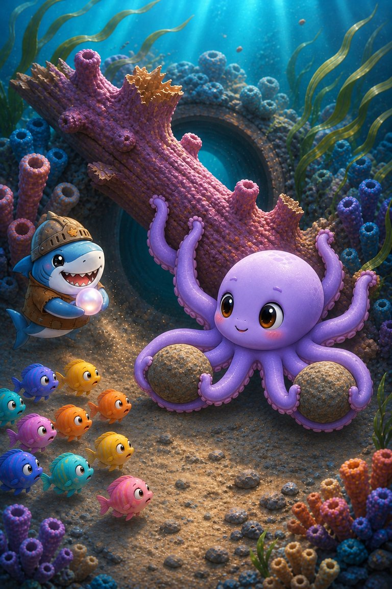
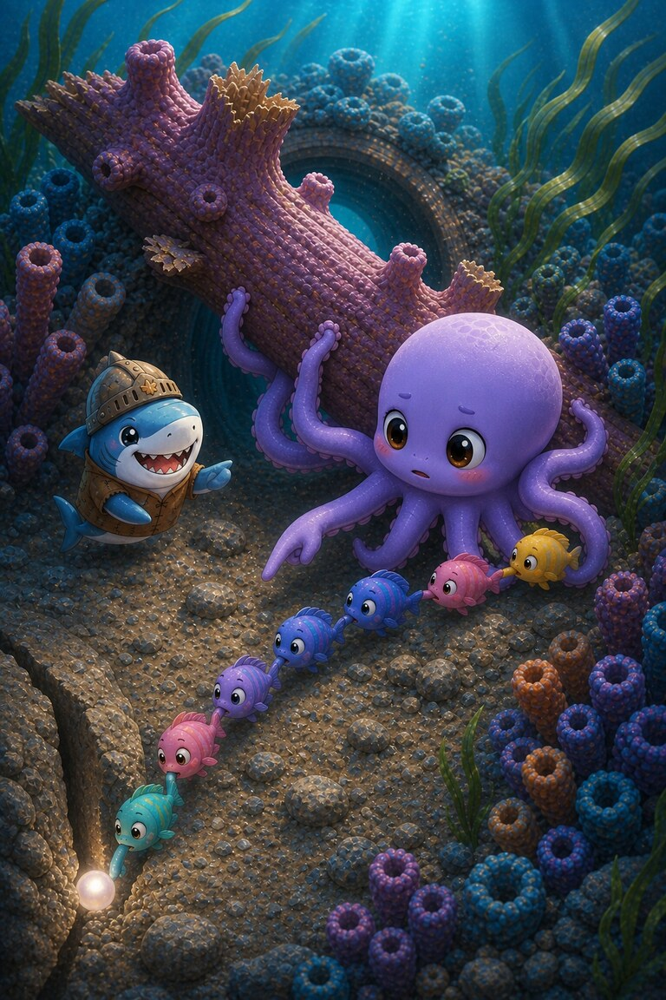
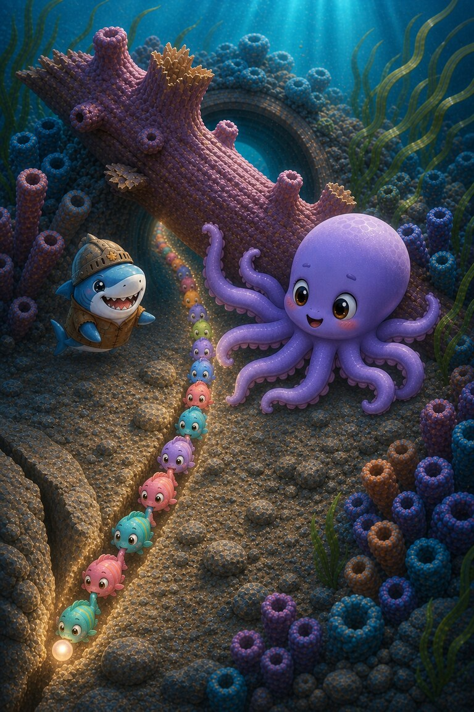

Page 1 of 4
A storm has wedged loose coral across the reef nursery. Octo-Pop promises the tiny fish he will clear a safe path before the strong current returns.
A four-page reef rescue about eight strong arms, tiny helpers and a pearl passed from fin to fin.
5 printed pages · 0.9 MB · A4 or US Letter. Download PDF · Open PDF to printOpens in a new tab. Use the PDF viewer's Print control. To use less ink, read online and choose only the questions on page 5 in Print.
A storm has wedged loose coral across the reef nursery. Octo-Pop promises the tiny fish he will clear a safe path before the strong current returns.

He carries two stones in four arms and steadies the coral with four more. Then Cereal-Swimmer arrives clutching the nursery’s guiding pearl.

A wave knocks the pearl into a narrow crack. Octo cannot reach it while holding the reef, so he asks the smallest fish to form a passing chain.

The chain returns the pearl one fin at a time, and its glow guides everyone through. Eight strong arms saved the reef; many small fins saved its light.
They formed a passing chain.
He had to keep holding the reef steady.
SnackPack Sentences & Spelling has many more short reads like this one, plus the Reading Trail, word packs and literacy games.
Related read-together bookShelly-Pop’s Slow and Steady
Explore another book · read togetherSub‑Zero and the Snowflake Post
Know a family or class who would enjoy it?